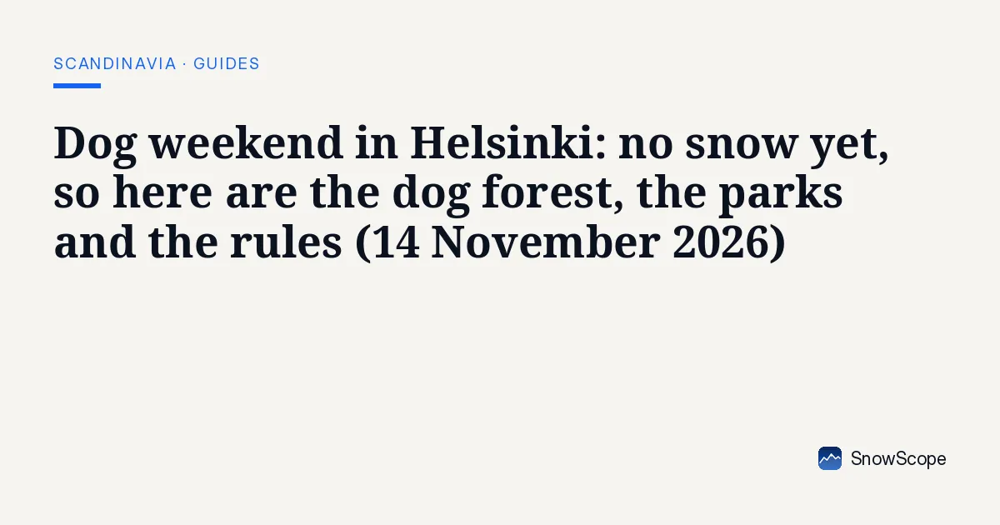

Dog weekend in Helsinki: no snow yet, so here are the dog forest, the parks and the rules (14 November 2026)
No snow for Helsinki's dogs this weekend. On Friday morning the stations at Kaisaniemi, Kumpula, Tapiola, Helsinki-Vantaa and Nuuksio all measured bare ground, and the nearest snow was 2 cm at Kiikala, 78 km to the west. Saturday is grey and close to zero, Sunday milder. Good walking weather, though, and the city has more room for dogs than most.
See the live snow forecast for Helsinki in the SnowScope appSnow depth, powder alerts and the 3D map, free.
Where dogs can run
Helsinki has nearly a hundred fenced dog parks, most with separate sections for small and large dogs. For a real forest run, the Östersundom dog forest is an unfenced area of about 50 hectares set aside for walking and training dogs; the dog must stay inside the area. The city also keeps four dog beaches, at Lauttasaari, Rajasaari, Tervasaari and Tuorinniemi, for the hardy swimmers.

The rules that matter now
Under the Public Order Act a dog must be on a lead in built-up areas all year, and it may not be taken onto a public groomed ski track. In the forests, the hunting-law season when dogs must be leashed or immediately leashable runs from 1 March to 19 August, so it is not in force now. In nature reserves the city asks you not to let dogs loose.
When the snow comes: Keskuspuisto and Paloheinä
Keskuspuisto, the green belt running about 10 km north from the city centre, turns some of its paths into ski tracks in winter. At Paloheinä the city asks walkers not to walk on the tracks or take dogs onto them, but there is a separate dog ski track where you can ski with your dog. In our snow history Helsinki usually gets its first lasting snow around 20 November, so keep these for the coming weeks.
Tips for skiers
- Dark, wet afternoons: a light on the collar and a reflective vest make the park paths safer.
- Leaves and mud instead of snow: a towel in the car or by the door saves the hallway.
- When the tracks open, keep the dog off them unless the track is signed for dogs.
More maps (external sites)
References and credits
- Finnish Meteorological Institute, open data (daily snow depth) en.ilmatieteenlaitos.fi/open-data
- City of Helsinki, dogs and other pets (dog parks, dog forest, dog beaches) www.hel.fi/fi/kaupunkiymparisto-ja-liikenne/ympariston-ja-luonnon-suojelu/elaimet/koirat-ja-muut-lemmikit
- City of Helsinki, Paloheinä outdoor area (ski tracks, dog ski track) www.hel.fi/fi/kulttuuri-ja-vapaa-aika/ulkoilu-puistot-ja-luontokohteet/ulkoilualueet/paloheinan-ulkoilualue
- City of Helsinki, Keskuspuisto (Central Park) www.hel.fi/fi/kulttuuri-ja-vapaa-aika/ulkoilu-puistot-ja-luontokohteet/ulkoilualueet/keskuspuisto
- City of Tampere, dog as a pet (Public Order Act, section 14, quoted in full) www.tampere.fi/luonto-ja-ymparisto/elaimet/koira-lemmikkina
- Open-Meteo, weather forecast data (ECMWF and ICON models) open-meteo.com/
About these numbers
Snow depth today: measured at weather stations on the morning of 13 November 2026 (Finnish Meteorological Institute); a station reports the snow on its own small plot, so a few kilometres away and a hundred metres higher the ground can look different. Usual depth for the date: SnowScope snow history, 46 past winters (1980-81 to 2025-26), a model of the past at the city's height, not a station record. Weekend: two weather models (ECMWF IFS and DWD ICON, read through Open-Meteo), given as a range. Places and rules: the official pages listed below.
Cite this report
For research, teaching or the press: the numbers and charts are free to reuse under CC BY 4.0 with this citation.
SnowScope (2026), Dog weekend in Helsinki: no snow yet, so here are the dog forest, the parks and the rules (14 November 2026), https://snowscope.app/blog/en/2026/11/helsinki-dog-snow-weekend-14-november-2026.html, accessed 2026-11-14
SnowScope (Atlas Labs). (2026, November 14). Dog weekend in Helsinki: no snow yet, so here are the dog forest, the parks and the rules (14 November 2026). SnowScope snow reports. https://snowscope.app/blog/en/2026/11/helsinki-dog-snow-weekend-14-november-2026.html
BibTeX
@misc{snowscope2026helsinkidogsnowweekend14,
author = {{SnowScope (Atlas Labs)}},
title = {Dog weekend in Helsinki: no snow yet, so here are the dog forest, the parks and the rules (14 November 2026)},
year = {2026},
month = nov,
howpublished = {\url{https://snowscope.app/blog/en/2026/11/helsinki-dog-snow-weekend-14-november-2026.html}},
note = {Published 2026-11-14 13:29 UTC; accessed 2026-11-14}
}· CC BY 4.0 · Methods, data and tools →
Follow Helsinki
Free: a message when fresh snow is coming, and the forecast every morning.
More snow reports

Steamboat, Colorado, for families: what works for toddlers, school-age kids, teens and parents, with the snow of 46 past winters at three heights.

How to spend a first day at Park City Mountain, Utah, and when to go: our snow history gives about 71 in (180 cm) at the usual mid-mountain peak over 46 past winters.

Skiing Lake Louise early in the season: why it starts early, what November and December snow usually looks like in 46 past winters, and how to ski thin early cover.